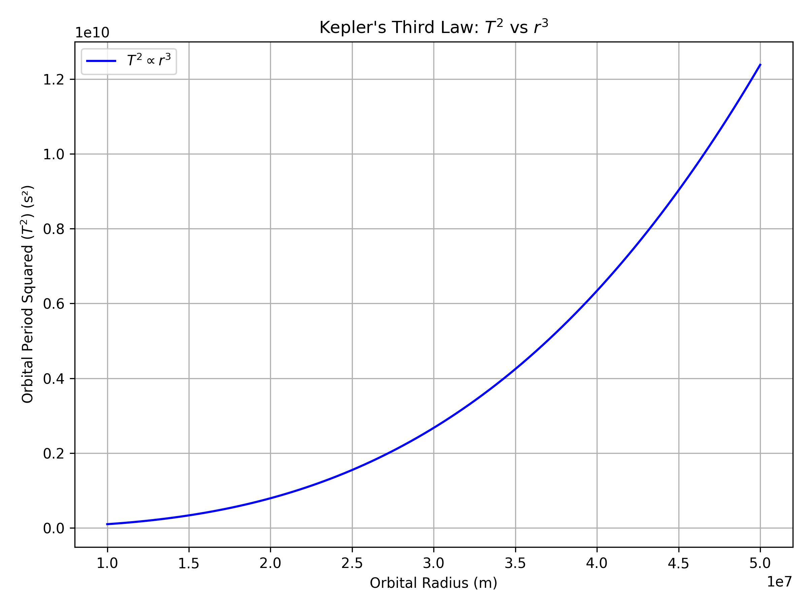
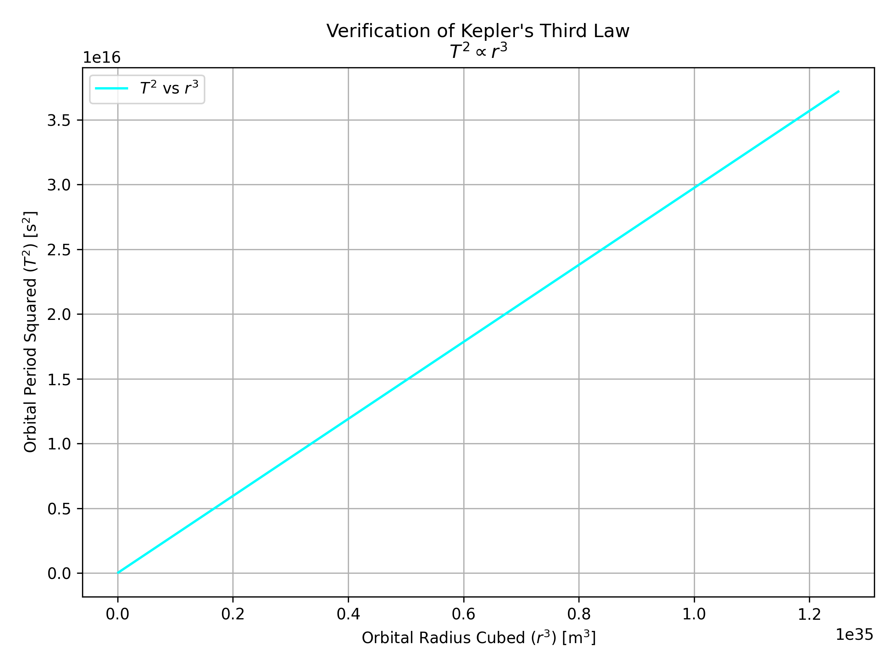

Orbital Period and Orbital Radius
Deriving the Relationship Between Orbital Period and Orbital Radius
In celestial mechanics, Kepler's Third Law describes the motion of planets in circular orbits around a central body. It states that the square of the orbital period (T²) is directly proportional to the cube of the orbital radius (r³).
To derive this relationship, we equate the gravitational force providing the centripetal acceleration:
Solving for the orbital velocity \( v \), and then substituting into the formula for period \( T = \frac{2\pi r}{v} \), we find:
This derivation shows that \( T^2 \propto r^3 \), confirming Kepler's Third Law for circular orbits.

Implications of the \( T^2 \propto r^3 \) Relationship in Astronomy
Kepler’s Third Law, expressed as \( T^2 \propto r^3 \), has profound implications in astronomy. It enables scientists to:
- Determine the mass of a central celestial body by analyzing the motion of its orbiting objects.
- Calculate distances between planets and their stars, especially useful in studying exoplanetary systems.
- Support the foundation of Newton’s law of universal gravitation.
- Improve our understanding of the structure and dynamics of planetary systems and galaxies.
This relationship remains a cornerstone in orbital mechanics and space exploration.

Real-World Examples of \( T^2 \propto r^3 \)
This relationship is evident in many real-world cases:
- The Moon's orbit around Earth follows Kepler’s Third Law, where its orbital period and distance align with the \( T^2 \propto r^3 \) ratio, helping estimate Earth's mass.
- Planets in the Solar System obey this law, with outer planets like Jupiter and Saturn having longer periods due to their greater distances from the Sun.
- Artificial satellites also follow this principle, allowing precise placement in orbits for communication and GPS.
These examples show how the law governs both natural and human-made orbital systems.